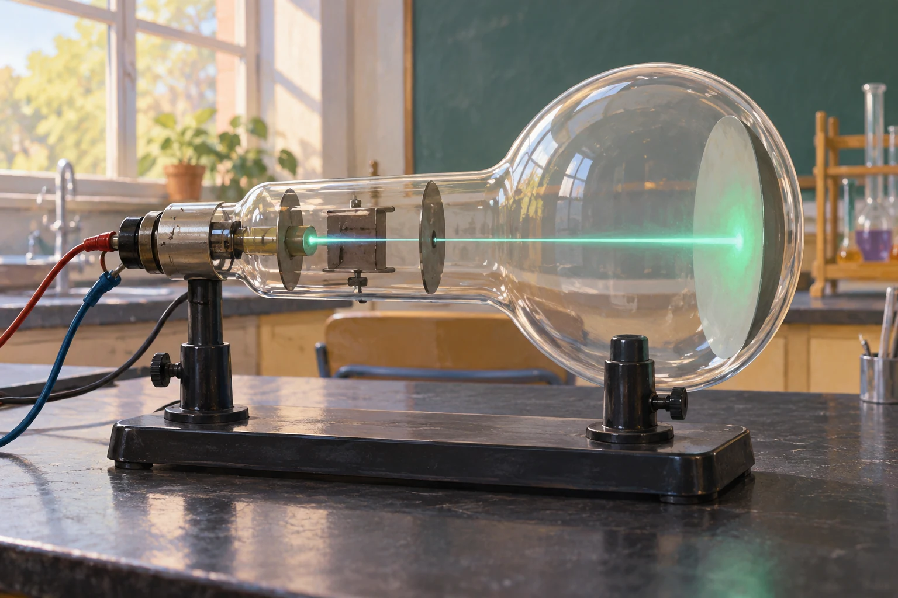

Zusatzaufgaben · Physik
Fermi-Aufgaben · Quantenphysik
Wählt eine Aufgabe und entwickelt euren eigenen Lösungsweg.

Aufgabe 29 · Q2 LK
Materiewellen im Elektronenstrahl
Ein Elektron wird durch eine Spannung von 100 V beschleunigt. Wie groß ist seine de-Broglie-Wellenlänge ungefähr, und wie oft passt diese Wellenlänge in die Breite eines menschlichen Haares?